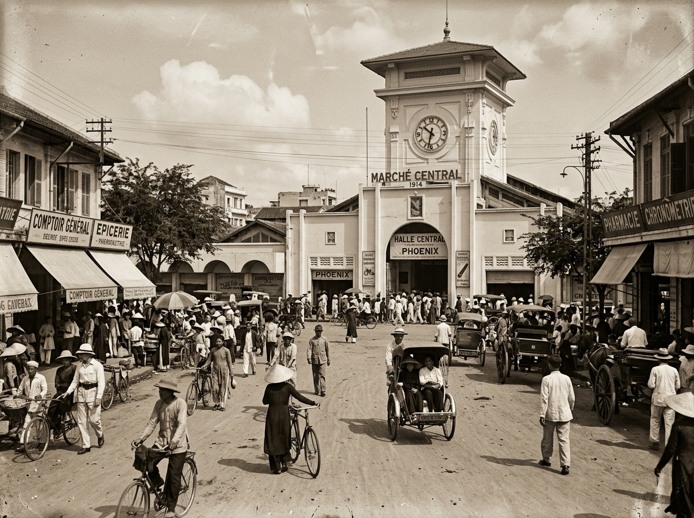

Cổng Nam & Tháp Đồng Hồ
Góc nhìn toàn cảnh mặt tiền hướng ra đường Lê Lợi dưới ánh hoàng hôn vàng ruộm.
Hình 3.2: Mặt tiền Cổng Nam – biểu tượng nhận diện của du lịch TP.HCM.
Mỗi bức ảnh là một lát cắt thời gian ghi lại vẻ đẹp kiêu hãnh của công trình kiến trúc biểu tượng, nhịp đập buôn bán rộn ràng và sự đa dạng văn hóa ẩm thực của Thành phố Hồ Chí Minh qua hơn 100 năm phát triển. Toàn bộ hình ảnh đều được đính kèm chú thích và nguồn lưu trữ rõ ràng.
Góc nhìn toàn cảnh mặt tiền hướng ra đường Lê Lợi dưới ánh hoàng hôn vàng ruộm.

Tư liệu lưu trữ quý giá ngày khánh thành chợ với các cỗ xe ngựa và xe kéo tay xưa.

Cận cảnh mặt đồng hồ cơ khí tròn và các họa tiết phào chỉ kiến trúc Đông Dương.

Hàng trăm gian hàng vỉa hè lung linh ánh đèn và tấp nập khách du lịch sau 18:00.

Mâm ẩm thực trứ danh: bún riêu cua đồng, bánh xèo giòn tan và chè ngọt mát.

Ấn phẩm đồ họa truyền thông phong cách Retro Indochine do Thành viên 2 thiết kế.

Ấn phẩm chỉ dẫn hành trình 5 bước khám phá di sản 24h do Thành viên 3 thiết kế.
Biểu tượng hình tròn kết hợp tháp đồng hồ, cánh sen và sắc đỏ gạch - vàng cổ.
Bạn có ý kiến đóng góp hoặc thắc mắc? Hãy liên hệ với chúng tôi:
Gửi Ý Kiến Đóng Góp →